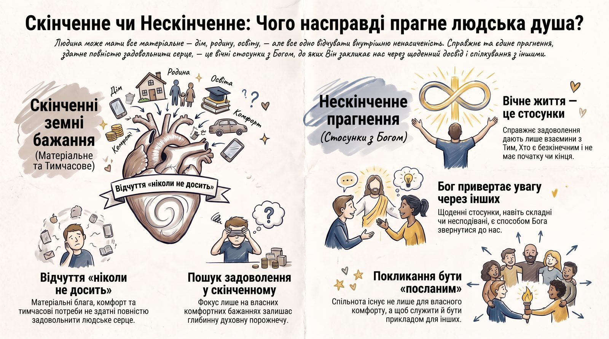

Владика Браян Байда: «Бог посилає вас»
Проповідь на 50-ліття парафії про те, чого насправді прагне людське серце і чому вічне життя є стосунками з Богом.
Читати й слухати (14:21) →apostol.ua
Події, проповіді та життя українських громад у різних країнах і містах.

Проповідь на 50-ліття парафії про те, чого насправді прагне людське серце і чому вічне життя є стосунками з Богом.
Читати й слухати (14:21) →У цій рубриці поки немає новин.
Громади
Кожна громада має власну адресу: спершу країна, потім місто. Там зібрані всі новини цієї громади.
1 новина: проповідь Владики Браяна на 50-ліття парафії.
Остання новина →Нове місто з'явиться тут разом із першою новиною.
Про нас
Грецьке ἀπόστολος означає «посланий». Ми збираємо на одному сайті новини українських громад, щоб люди в різних містах і країнах знали, чим живуть інші.
Усі матеріали українською і безкоштовно.
Один лист, коли з'являються нові матеріали.
Це макет: підписка запрацює, коли сайт буде на apostol.ua.